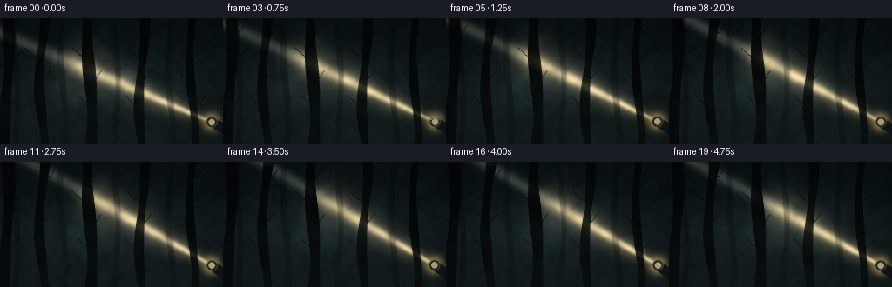
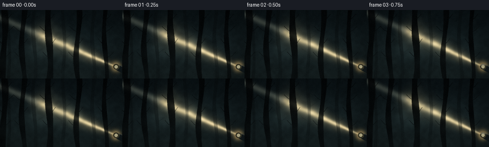

CODING AGENTS AS PIXEL WORLD MODELS
traex/DeepSeek-V4.1-Flash · phygen_054
点击播放 · 原生 RGB 像素
逐轮保存的候选
回放视频、检查图与代码变化。
每份候选均可单独播放。实际图片检查记录在下方工具轨迹中。
候选 01播放与检查图
点击播放 · 原生 RGB 像素


展开代码变化
--- 上一保存版本
+++ 本次保存版本
@@ -0,0 +1,398 @@
+from pathlib import Path
+
+import cv2
+import numpy as np
+from PIL import Image, ImageDraw
+from scipy.ndimage import gaussian_filter
+
+import artifact_io
+
+
+WIDTH = 256
+HEIGHT = 144
+FRAMES = 20
+FPS = 4.0
+SUPERSAMPLE = 3
+RW = WIDTH * SUPERSAMPLE
+RH = HEIGHT * SUPERSAMPLE
+
+
+def smoothstep(edge0, edge1, value):
+ t = np.clip((value - edge0) / (edge1 - edge0), 0.0, 1.0)
+ return t * t * (3.0 - 2.0 * t)
+
+
+def value_noise(rng, shape, scale, octaves=4, persistence=0.52):
+ height, width = shape
+ result = np.zeros(shape, dtype=np.float32)
+ amplitude = 1.0
+ total = 0.0
+ for octave in range(octaves):
+ divisor = scale * (2**octave)
+ low_h = max(2, int(np.ceil(height / divisor)) + 2)
+ low_w = max(2, int(np.ceil(width / divisor)) + 2)
+ lattice = rng.random((low_h, low_w), dtype=np.float32)
+ layer = cv2.resize(lattice, (width, height), interpolation=cv2.INTER_CUBIC)
+ result += amplitude * layer
+ total += amplitude
+ amplitude *= persistence
+ result /= total
+ result = np.clip(result, 0.0, 1.0)
+ lo, hi = np.percentile(result, [1.0, 99.0])
+ return np.clip((result - lo) / max(hi - lo, 1e-5), 0.0, 1.0)
+
+
+def render_tree_mask():
+ mask = Image.new("L", (RW, RH), 0)
+ draw = ImageDraw.Draw(mask)
+
+ # Far trunks sit deeper in the fog and have the softest silhouettes.
+ far_trees = [
+ (18, 3.0, 0.016, 4.2),
+ (72, 3.6, 0.021, 3.4),
+ (133, 3.2, 0.018, 5.1),
+ (196, 3.7, 0.022, 2.6),
+ ]
+ for x0, width, sway, phase in far_trees:
+ left = []
+ right = []
+ for y in range(-10, HEIGHT + 10, 3):
+ center = x0 + sway * HEIGHT * np.sin(y * 0.037 + phase)
+ taper = 1.0 + 0.12 * np.sin(y * 0.071 + phase)
+ left.append(((center - width * taper) * SUPERSAMPLE, y * SUPERSAMPLE))
+ right.append(((center + width * taper) * SUPERSAMPLE, y * SUPERSAMPLE))
+ draw.polygon(left + right[::-1], fill=100)
+ for y in (29, 61, 92):
+ center = x0 + sway * HEIGHT * np.sin(y * 0.037 + phase)
+ direction = -1 if int(x0 + y) % 2 else 1
+ draw.line(
+ [
+ (center * SUPERSAMPLE, y * SUPERSAMPLE),
+ ((center + direction * (12 + width)) * SUPERSAMPLE, (y - 11) * SUPERSAMPLE),
+ ],
+ fill=76,
+ width=max(1, int(0.7 * SUPERSAMPLE)),
+ )
+
+ # Near trunks establish the forest depth without covering the beam source.
+ near_trees = [
+ (8, 6.0, 0.020, 0.4),
+ (49, 5.2, 0.027, 2.2),
+ (103, 6.4, 0.019, 4.0),
+ (163, 5.0, 0.025, 1.3),
+ (221, 4.4, 0.022, 3.1),
+ ]
+ for x0, width, sway, phase in near_trees:
+ left = []
+ right = []
+ for y in range(-12, HEIGHT + 14, 2):
+ center = x0 + sway * HEIGHT * np.sin(y * 0.034 + phase)
+ taper = 1.0 + 0.16 * np.sin(y * 0.063 + phase)
+ left.append(((center - width * taper) * SUPERSAMPLE, y * SUPERSAMPLE))
+ right.append(((center + width * taper) * SUPERSAMPLE, y * SUPERSAMPLE))
+ draw.polygon(left + right[::-1], fill=255)
+ for y, reach in ((21, 14), (47, 18), (73, 13), (101, 16)):
+ center = x0 + sway * HEIGHT * np.sin(y * 0.034 + phase)
+ direction = 1 if (int(x0) + y) % 3 else -1
+ elbow = (center + direction * reach * 0.55, y - 5)
+ tip = (center + direction * reach, y - 13)
+ draw.line(
+ [(center * SUPERSAMPLE, y * SUPERSAMPLE),
+ (elbow[0] * SUPERSAMPLE, elbow[1] * SUPERSAMPLE)],
+ fill=225,
+ width=max(1, int(1.25 * SUPERSAMPLE)),
+ )
+ draw.line(
+ [(elbow[0] * SUPERSAMPLE, elbow[1] * SUPERSAMPLE),
+ (tip[0] * SUPERSAMPLE, tip[1] * SUPERSAMPLE)],
+ fill=215,
+ width=max(1, int(0.75 * SUPERSAMPLE)),
+ )
+
+ return np.asarray(mask, dtype=np.float32) / 255.0
+
+
+def draw_flashlight(image, source, direction, frame_index):
+ """Draw the small, partly off-screen torch at the beam origin."""
+ layer = Image.new("RGBA", (RW, RH), (0, 0, 0, 0))
+ draw = ImageDraw.Draw(layer)
+
+ ux, uy = direction
+ px, py = -uy, ux
+ sx, sy = source
+ length = 35.0
+ back = (sx - ux * length, sy - uy * length)
+ front_half = 5.7
+ back_half = 8.6
+
+ def point(x, y):
+ return (int(round(x * SUPERSAMPLE)), int(round(y * SUPERSAMPLE)))
+
+ casing = [
+ point(sx + px * front_half, sy + py * front_half),
+ point(back[0] + px * back_half, back[1] + py * back_half),
+ point(back[0] - px * back_half, back[1] - py * back_half),
+ point(sx - px * front_half, sy - py * front_half),
+ ]
+ draw.polygon(casing, fill=(16, 22, 24, 255))
+
+ highlight = [
+ point(sx + px * front_half, sy + py * front_half),
+ point(back[0] + px * back_half, back[1] + py * back_half),
+ point(back[0] + px * (back_half - 2.2), back[1] + py * (back_half - 2.2)),
+ point(sx + px * (front_half - 1.4), sy + py * (front_half - 1.4)),
+ ]
+ draw.polygon(highlight, fill=(66, 73, 70, 165))
+
+ for offset in (8.0, 16.0, 24.0, 31.0):
+ cx = sx - ux * offset
+ cy = sy - uy * offset
+ half = front_half + (back_half - front_half) * offset / length
+ draw.line(
+ [point(cx + px * half, cy + py * half),
+ point(cx - px * half, cy - py * half)],
+ fill=(4, 8, 9, 220),
+ width=max(1, int(0.65 * SUPERSAMPLE)),
+ )
+
+ radius = 6.2
+ draw.ellipse(
+ [point(sx - radius, sy - radius), point(sx + radius, sy + radius)],
+ fill=(38, 34, 24, 255),
+ outline=(132, 111, 70, 255),
+ width=max(1, int(0.8 * SUPERSAMPLE)),
+ )
+ lens_r = 3.7
+ draw.ellipse(
+ [point(sx - lens_r, sy - lens_r), point(sx + lens_r, sy + lens_r)],
+ fill=(255, 237, 180, 255),
+ )
+ if frame_index % 7 == 3:
+ draw.arc(
+ [point(sx - 5.1, sy - 5.1), point(sx + 5.1, sy + 5.1)],
+ 205,
+ 330,
+ fill=(255, 251, 225, 210),
+ width=max(1, SUPERSAMPLE),
+ )
+
+ layer = np.asarray(layer, dtype=np.float32) / 255.0
+ alpha = layer[..., 3:4]
+ rgb = layer[..., :3]
+ return image * (1.0 - alpha) + rgb * alpha
+
+
+def make_beam(x, y, source, target, fog_field):
+ sx, sy = source
+ dx = target[0] - sx
+ dy = target[1] - sy
+ length = float(np.hypot(dx, dy))
+ ux = dx / length
+ uy = dy / length
+ rx = x - sx
+ ry = y - sy
+ along = rx * ux + ry * uy
+ lateral = np.abs(rx * uy - ry * ux)
+
+ t = np.clip(along / length, 0.0, 1.0)
+ half_width = 1.9 + 27.0 * t
+ core = np.exp(-1.65 * (lateral / (0.37 * half_width + 1.2)) ** 2)
+ halo = np.exp(-1.18 * (lateral / (half_width + 2.5)) ** 2)
+
+ near = smoothstep(0.0, 12.0, along)
+ far = 1.0 - smoothstep(length - 26.0, length + 25.0, along)
+ extinction = np.exp(-0.55 * t**1.45)
+ modulation = 0.62 + 0.62 * fog_field
+ beam = (0.92 * core + 0.25 * halo) * near * far * extinction * modulation
+ beam = np.clip(beam, 0.0, 1.45)
+ return beam, core, along, lateral, length
+
+
+def render_frame(frame_index, tree_mask, fog_base, fog_fine, wisp_a, wisp_b):
+ t = frame_index / (FRAMES - 1)
+ ease = t * t * (3.0 - 2.0 * t)
+
+ y_coords = (np.arange(RH, dtype=np.float32) + 0.5) / SUPERSAMPLE
+ x_coords = (np.arange(RW, dtype=np.float32) + 0.5) / SUPERSAMPLE
+ x, y = np.meshgrid(x_coords, y_coords)
+
+ drift_x = int(round(frame_index * 1.15 * SUPERSAMPLE))
+ drift_y = int(round(frame_index * 0.28 * SUPERSAMPLE))
+ fog = np.roll(fog_base, shift=(drift_y, drift_x), axis=(0, 1))
+ fine = np.roll(fog_fine, shift=(drift_y * 2, drift_x * 2 + frame_index), axis=(0, 1))
+ wisp1 = np.roll(wisp_a, shift=(int(frame_index * 0.7), int(frame_index * 2.1)), axis=(0, 1))
+ wisp2 = np.roll(wisp_b, shift=(int(-frame_index * 0.5), int(-frame_index * 1.5)), axis=(0, 1))
+
+ vertical = y / HEIGHT
+ base_top = np.array([0.018, 0.035, 0.043], dtype=np.float32)
+ base_bottom = np.array([0.045, 0.061, 0.062], dtype=np.float32)
+ background = base_top[None, None, :] * (1.0 - vertical[..., None])
+ background += base_bottom[None, None, :] * vertical[..., None]
+
+ horizon = np.exp(-((y - 78.0) / 28.0) ** 2)
+ center_glow = np.exp(-((x - 122.0) / 92.0) ** 2)
+ background += (horizon * center_glow * (0.035 + 0.055 * fog))[..., None] * np.array(
+ [0.68, 0.88, 0.89], dtype=np.float32
+ )
+ background += ((0.018 + 0.036 * fine) * (0.35 + 0.65 * vertical))[..., None] * np.array(
+ [0.50, 0.72, 0.74], dtype=np.float32
+ )
+
+ # The fog is denser close to the ground, with long translucent banks.
+ mist_density = np.clip(
+ 0.25 + 0.56 * fog + 0.19 * fine + 0.10 * vertical + 0.12 * wisp1,
+ 0.0,
+ 1.2,
+ )
+ background += (0.022 * mist_density)[..., None] * np.array(
+ [0.65, 0.82, 0.82], dtype=np.float32
+ )
+
+ source = (
+ 243.0 + 0.40 * np.sin(frame_index * 0.83),
+ 119.0 + 0.28 * np.cos(frame_index * 0.67),
+ )
+ target_x = 77.0 + 40.0 * ease + 1.4 * np.sin(frame_index * 0.9)
+ target_y = 48.0 - 10.0 * np.sin(np.pi * t) + 1.0 * np.cos(frame_index * 0.72)
+ target = (target_x, target_y)
+
+ beam, core, along, lateral, length = make_beam(x, y, source, target, fog)
+ fine_beam = 0.74 + 0.26 * np.roll(fog_fine, shift=(frame_index, -frame_index * 2), axis=(0, 1))
+ beam *= fine_beam
+
+ beam_color = np.array([1.00, 0.84, 0.58], dtype=np.float32)
+ hot_color = np.array([1.00, 0.95, 0.79], dtype=np.float32)
+ beam_rgb = beam[..., None] * beam_color
+ beam_rgb += (core**2 * 0.20)[..., None] * hot_color
+
+ # A warm forward-scattering glow gives the cone volume rather than a flat wedge.
+ broad_beam = cv2.GaussianBlur(beam, (0, 0), sigmaX=7.0 * SUPERSAMPLE, sigmaY=7.0 * SUPERSAMPLE)
+ beam_rgb += broad_beam[..., None] * np.array([0.20, 0.135, 0.072], dtype=np.float32)
+
+ dist_source = np.hypot(x - source[0], y - source[1])
+ source_glow = np.exp(-(dist_source / (9.0 + frame_index * 0.015)) ** 2)
+ beam_rgb += source_glow[..., None] * np.array([1.15, 0.84, 0.45], dtype=np.float32)
+
+ flicker = 1.0 + 0.035 * np.sin(frame_index * 1.73) + 0.018 * np.sin(frame_index * 3.11)
+ image = background + beam_rgb * flicker
+
+ # Cool fog separates the trunks into depth planes.
+ far_alpha = np.clip(0.23 + 0.23 * fog, 0.0, 0.52)
+ far_mask = smoothstep(0.02, 0.42, tree_mask) * far_alpha
+ image = image * (1.0 - far_mask[..., None]) + np.array(
+ [0.020, 0.030, 0.032], dtype=np.float32
+ )[None, None, :] * far_mask[..., None]
+
+ near_mask = smoothstep(0.36, 0.84, tree_mask)
+ near_mask *= np.clip(0.58 + 0.33 * fog, 0.0, 0.94)
+ image = image * (1.0 - near_mask[..., None]) + np.array(
+ [0.007, 0.012, 0.014], dtype=np.float32
+ )[None, None, :] * near_mask[..., None]
+
+ # A low, translucent bank in front of the trees makes the mist read as thick.
+ front_bank = np.clip((0.46 * wisp2 + 0.16) * smoothstep(52.0, 140.0, y), 0.0, 0.42)
+ bank_color = np.array([0.105, 0.137, 0.136], dtype=np.float32)
+ bank_color = bank_color[None, None, :] + beam[..., None] * np.array(
+ [0.20, 0.15, 0.08], dtype=np.float32
+ )
+ image = image * (1.0 - front_bank[..., None] * 0.43) + bank_color * (
+ front_bank[..., None] * 0.43
+ )
+
+ # Dust is sparse and only bright where it crosses the flashlight cone.
+ beam_small = cv2.resize(beam, (WIDTH, HEIGHT), interpolation=cv2.INTER_AREA)
+ dust_mask = np.zeros((RH, RW), dtype=np.float32)
+ particle_rng = np.random.default_rng(117)
+ px = particle_rng.uniform(24, 249, 150)
+ py = particle_rng.uniform(18, 132, 150)
+ phase = particle_rng.uniform(0.0, 2.0 * np.pi, 150)
+ size = particle_rng.uniform(0.45, 1.20, 150)
+ for i in range(150):
+ dx = 0.85 * np.sin(frame_index * 0.35 + phase[i])
+ dy = -0.62 * frame_index * 0.10 + 0.50 * np.cos(frame_index * 0.27 + phase[i])
+ cx = int(round((px[i] + dx) * SUPERSAMPLE))
+ cy = int(round((py[i] + dy) * SUPERSAMPLE))
+ if not (1 <= cx < RW - 1 and 1 <= cy < RH - 1):
+ continue
+ sampled_beam = beam_small[
+ min(HEIGHT - 1, max(0, int(py[i] + dy))),
+ min(WIDTH - 1, max(0, int(px[i] + dx))),
+ ]
+ if sampled_beam < 0.035:
+ continue
+ strength = (0.10 + 0.48 * min(1.0, sampled_beam)) * (0.72 + 0.28 * np.sin(phase[i] + frame_index))
+ radius = max(1, int(round(size[i] * SUPERSAMPLE)))
+ dust_mask[cy - radius : cy + radius + 1, cx - radius : cx + radius + 1] += strength / (
+ (2 * radius + 1) ** 2
+ )
+ dust_mask = gaussian_filter(dust_mask, sigma=0.42 * SUPERSAMPLE)
+ image += dust_mask[..., None] * np.array([1.0, 0.90, 0.70], dtype=np.float32)
+
+ ux = (target[0] - source[0]) / length
+ uy = (target[1] - source[1]) / length
+ image = draw_flashlight(image, source, (ux, uy), frame_index)
+
+ # Filmic shoulder, then restrained bloom and a cool-shadow/warm-highlight grade.
+ image = 1.0 - np.exp(-np.maximum(image, 0.0) * 1.18)
+ bright = np.clip(image - 0.48, 0.0, None)
+ bloom = (
+ 0.42 * cv2.GaussianBlur(bright, (0, 0), sigmaX=1.15 * SUPERSAMPLE, sigmaY=1.15 * SUPERSAMPLE)
+ + 0.24 * cv2.GaussianBlur(bright, (0, 0), sigmaX=5.8 * SUPERSAMPLE, sigmaY=5.8 * SUPERSAMPLE)
+ )
+ image += bloom
+
+ luminance = image @ np.array([0.2126, 0.7152, 0.0722], dtype=np.float32)
+ shadow_tint = np.array([0.90, 1.015, 1.045], dtype=np.float32)
+ highlight_tint = np.array([1.035, 1.005, 0.955], dtype=np.float32)
+ tint_mix = np.clip(luminance, 0.0, 1.0)[..., None]
+ tint = shadow_tint[None, None, :] * (1.0 - tint_mix) + highlight_tint[None, None, :] * tint_mix
+ image *= tint
+
+ vignette = 1.0 - 0.23 * (
+ ((x - WIDTH * 0.5) / (WIDTH * 0.62)) ** 2
+ + ((y - HEIGHT * 0.48) / (HEIGHT * 0.72)) ** 2
+ )
+ image *= np.clip(vignette, 0.70, 1.0)[..., None]
+
+ image = np.clip(image, 0.0, 1.0)
+ image = cv2.resize(image, (WIDTH, HEIGHT), interpolation=cv2.INTER_AREA)
+
+ # A tiny deterministic grain breaks up 8-bit banding in the low-light fog.
+ grain_rng = np.random.default_rng(900 + frame_index)
+ grain = grain_rng.normal(0.0, 0.0042, (HEIGHT, WIDTH, 1)).astype(np.float32)
+ image = np.clip(image + grain, 0.0, 1.0)
+ return (image * 255.0 + 0.5).astype(np.uint8)
+
+
+def main():
+ case_dir = Path(__file__).resolve().parent
+ rng = np.random.default_rng(20261110)
+ tree_mask = render_tree_mask()
+ fog_base = value_noise(rng, (RH, RW), 58.0, octaves=5, persistence=0.56)
+ fog_fine = value_noise(rng, (RH, RW), 19.0, octaves=4, persistence=0.50)
+ wisp_a = value_noise(rng, (RH, RW), 35.0, octaves=3, persistence=0.58)
+ wisp_b = value_noise(rng, (RH, RW), 43.0, octaves=3, persistence=0.55)
+
+ frames = [
+ render_frame(index, tree_mask, fog_base, fog_fine, wisp_a, wisp_b)
+ for index in range(FRAMES)
+ ]
+ frames = np.stack(frames, axis=0)
+ artifact_io.save(frames, case_dir)
+
+ # A compact MP4 is useful for quick playback in addition to the required artifacts.
+ video_path = case_dir / "flashlight_mist.mp4"
+ writer = cv2.VideoWriter(
+ str(video_path),
+ cv2.VideoWriter_fourcc(*"mp4v"),
+ FPS,
+ (WIDTH, HEIGHT),
+ )
+ for frame in frames:
+ writer.write(cv2.cvtColor(frame, cv2.COLOR_RGB2BGR))
+ writer.release()
+ print(f"Saved {FRAMES} frames and {video_path.name}")
+
+
+if __name__ == "__main__":
+ main()
可观测工具轨迹
实际执行的命令与返回图片。
命令 1exit 0
/bin/bash -c 'cat prompt.txt'
命令 2exit 0
/bin/bash -c 'cat GENERATION_RULES.md'
命令 3exit 0
/bin/bash -c 'cat task_spec.json'
命令 4exit 0
/bin/bash -c "find . -maxdepth 2 -type f -printf '%p\\n' | sort"
命令 5exit 0
/bin/bash -c "sed -n '1,240p' artifact_io.py"
命令 6exit 0
/bin/bash -c "sed -n '1,260p' player_template.html"
命令 7exit 0
/bin/bash -c "python - <<'PY' import importlib.util for m in ['numpy','PIL','cv2','imageio','matplotlib','scipy']: print(m, bool(importlib.util.find_spec(m))) PY"
命令 8exit 0
/bin/bash -c 'command -v chafa || command -v viu || command -v img2txt || command -v jp2 || true'
命令 9exit 0
/bin/bash -c 'python generate.py'
命令 10exit 0
/bin/bash -c "python - <<'PY'
from PIL import Image
import numpy as np
im=np.asarray(Image.open('frames/00.png').convert('L'))
# downsample then map luminance to a compact terminal preview
h,w=im.shape
out=Image.fromarray(im).resize((96,36), Image.Resampling.LANCZOS)
a=np.asarray(out)
chars=' .,:;irsXA253hMHGS#9B&@'
for row in a:
print(''.join(chars[min(len(chars)-1,int(v/256*len(chars)))] for v in row))
PY"命令 11exit 0
/bin/bash -c "python - <<'PY'
import numpy as np
from PIL import Image
from pathlib import Path
ims=np.stack([np.asarray(Image.open(p)) for p in sorted(Path('frames').glob('*.png'))])
print('shape/dtype',ims.shape,ims.dtype)
print('per-frame mean RGB', np.round(ims.mean(axis=(1,2)),1).tolist())
print('global percentiles', np.percentile(ims,[0,1,10,25,50,75,90,95,99,99.9,100]))
print('near-black pixel share (<8 any)', (ims.max(-1)<8).mean())
print('near-white pixels (>245 all)', (ims.min(-1)>245).sum())
d=np.abs(np.diff(ims.astype(np.int16),axis=0))
print('temporal mean abs diff',d.mean(), 'per-frame',np.round(d.mean(axis=(1,2,3)),2).tolist())
PY"命令 12exit 0
/bin/bash -c "python - <<'PY'
from PIL import Image
import numpy as np
for idx in [0,7,13,19]:
im=np.asarray(Image.open(f'frames/{idx:02d}.png').convert('L'))
im=np.asarray(Image.fromarray(im).resize((64,24),Image.Resampling.LANCZOS))
print('\\nFRAME',idx)
chars=' .,:;irsXA253hMHGS#9B&@'
for row in im:
print(''.join(chars[min(len(chars)-1,int(v/256*len(chars)))] for v in row))
PY"命令 13exit 0
/bin/bash -c "find . -maxdepth 2 -type f -printf '%p %s bytes\\n' | sort"
命令 14exit 0
/bin/bash -c "python - <<'PY'
import numpy as np, json, base64
z=np.load('pixels.npz')['pixels']
print('pixels', z.shape, z.dtype)
print('index.html bytes', len(open('index.html','rb').read()))
print('ready flag', 'window.__pixelReady=true' in open('index.html').read())
print('caption present', 'A ray of light generated by a flashligh is passing through thick mist.' in open('index.html').read())
PY"命令 15exit 127
/bin/bash -c 'python -m py_compile generate.py && ffprobe -v error -show_entries stream=width,height,nb_frames,r_frame_rate -of default=nw=1 flashlight_mist.mp4'
命令 16exit 0
/bin/bash -c "python - <<'PY'
import cv2
cap=cv2.VideoCapture('flashlight_mist.mp4')
print('opened',cap.isOpened())
print('size',int(cap.get(cv2.CAP_PROP_FRAME_WIDTH)),int(cap.get(cv2.CAP_PROP_FRAME_HEIGHT)))
print('fps',cap.get(cv2.CAP_PROP_FPS))
print('frames',int(cap.get(cv2.CAP_PROP_FRAME_COUNT)))
cap.release()
PY"保存候选 1 份；完成命令 16 次；可验证图片返回 0 张。原始 API 响应与完整日志保留在本地。